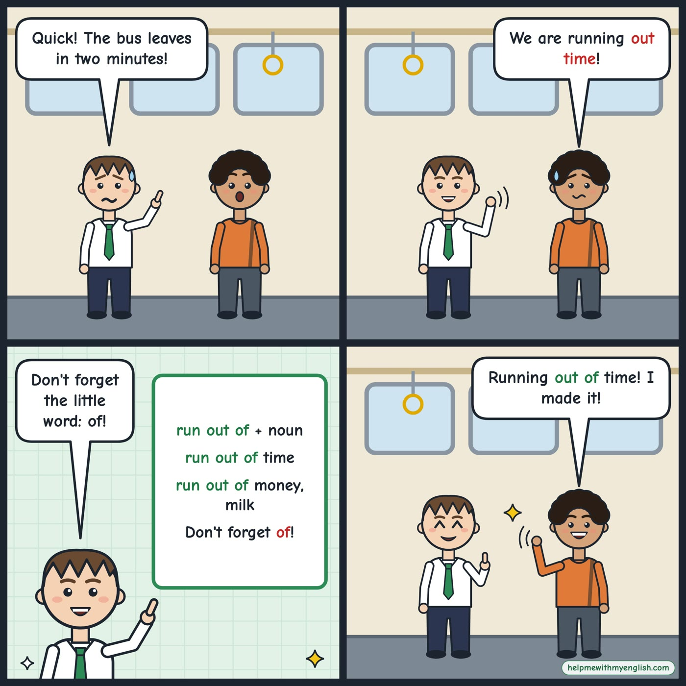

run out of time
To have no time left; to use all your time.
Hurry up! We're running out of time before the train leaves.
Tip: Use 'run out of time' (no object) to say the time is finished, and 'run out of + noun' for other things (run out of money, run out of milk); don't confuse it with 'be out of time', which sounds more final.
Hear it in conversation
Workbook
1. What does it mean?
In this conversation, what does 'ran out of time' mean?
2. Fill the gap
I wanted to check my answers again, but I before the exam ended.
3. Choose the best reply
Amira: Did you finish the whole report before the meeting?
4. Your turn: speak
Tell me about a time when you didn't have enough time to finish something. What happened?
Show an example answer
Last month I was packing for a trip and I left everything until the final evening. I ran out of time and forgot to pack my charger, so I had to buy a new one at the airport. Now I always start packing a day earlier.
Answer key: run out of time
- 1. A. He had no time left to finish what he wanted to do.
- 2. ran out of time
- 3. B. Almost. I ran out of time, so the last page is still empty.
- 4. Example: Last month I was packing for a trip and I left everything until the final evening. I ran out of time and forgot to pack my charger, so I had to buy a new one at the airport. Now I always start packing a day earlier.
See it in a comic
